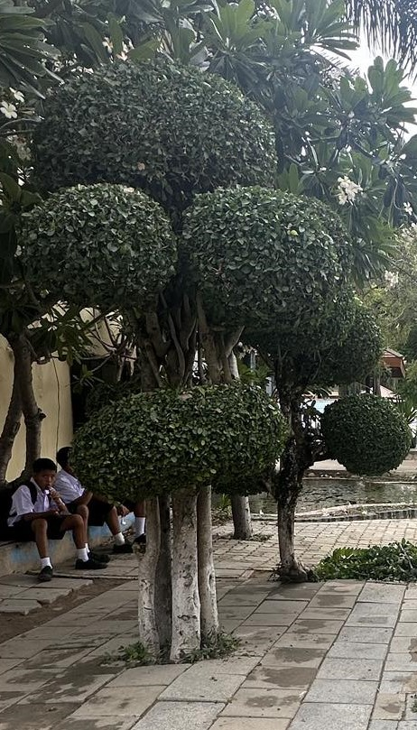
ช้อนเงินช้อนทอง
ต้นช้อนเงินช้อนทองไม่เพียงแต่เป็นไม้มงคลที่ช่วยเสริมสิริมงคลให้กับผู้ปลูกเท่านั้น ยังมีประโยชน์ด้านการฟอกอากาศและสรรพคุณทางยาอีกด้วย การปลูกต้นช้อนเงินช้อนทองจึงเป็นการลงทุนที่คุ้มค่าทั้งในด้านสุขภาพและความเป็นสิริมงคล
วิธีปลูกต้นช้อนเงินช้อนทอง
แสงแดด: ชอบแสงแดดรำไร ไม่ควรโดนแดดจัด
น้ำ: รดน้ำสัปดาห์ละ 2-3 ครั้ง หรือเมื่อดินแห้ง
ดิน: ชอบดินร่วนซุย มีอินทรีย์วัตถุ
ปุ๋ย: ใส่ปุ๋ยคอกหรือปุ๋ยหมักเดือนละครั้ง
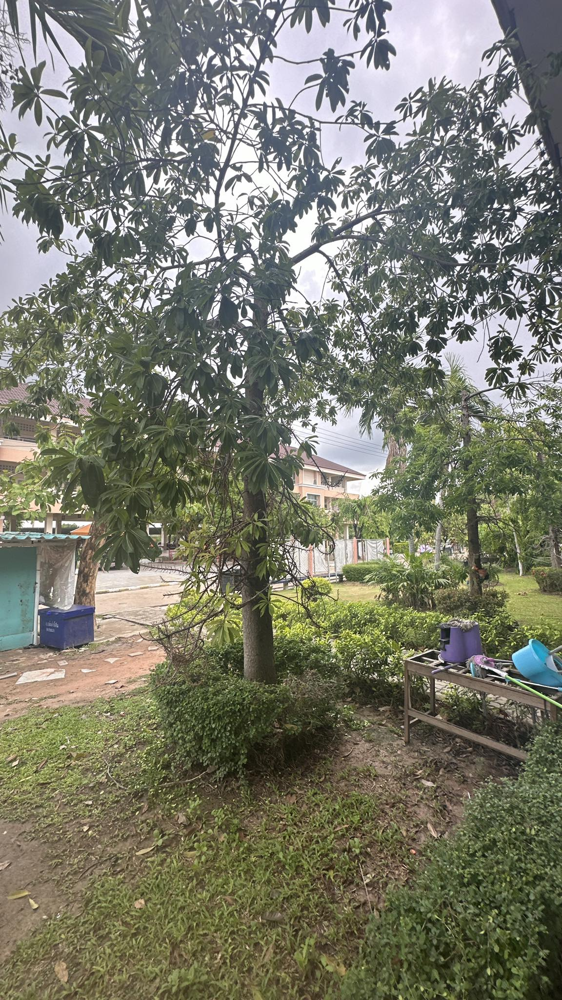
ต้นพยูง
ต้นพยูง เป็นไม้มีค่าชนิดหนึ่งที่มีความสำคัญทางเศรษฐกิจและวัฒนธรรมของไทยมายาวนาน ด้วยคุณสมบัติเด่นของเนื้อไม้ที่แข็งแรงทนทาน มีลวดลายสวยงาม และมีสีสันที่เป็นเอกลักษณ์ จึงทำให้ต้นพยูงเป็นที่ต้องการของตลาดทั้งในและต่างประเทศ
คุณสมบัติของต้นพยูง
เนื้อไม้แข็งแรงทนทาน: เนื้อไม้ของพยูงมีความแข็งแรง ทนทานต่อการผุพังและแมลง ทำให้เหมาะสำหรับการนำไปใช้ทำเฟอร์นิเจอร์ เครื่องดนตรี และงานแกะสลัก
ลวดลายสวยงาม: เนื้อไม้พยูงมีลวดลายที่สวยงามเป็นเอกลักษณ์ ซึ่งเกิดจากการรวมตัวกันของเส้นใยไม้ในรูปแบบต่างๆ ทำให้เกิดเป็นลวดลายที่แตกต่างกันไปในแต่ละชิ้น
สีสันสวยงาม: เนื้อไม้พยูงมีสีสันที่หลากหลาย ตั้งแต่สีน้ำตาลเข้มไปจนถึงสีดำอมม่วง ซึ่งเป็นที่ต้องการของตลาดเครื่องเรือนระดับสูง
กลิ่นหอมอ่อนๆ: เนื้อไม้พยูงมีกลิ่นหอมอ่อนๆ ซึ่งเป็นเอกลักษณ์เฉพาะตัว
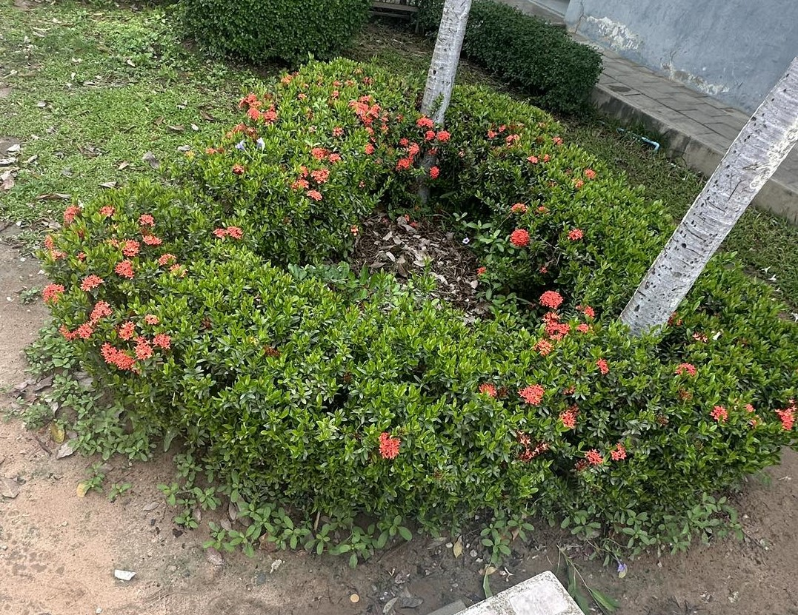
ดอกเข็ม
ดอกเข็ม นอกจากจะเป็นดอกไม้ที่สวยงามและใช้ประดับตกแต่งแล้ว ยังมีสรรพคุณทางยาที่น่าสนใจอีกด้วยค่ะ โดยส่วนต่าง ๆ ของต้นเข็ม ไม่ว่าจะเป็น ราก ใบ ดอก หรือผล ล้วนมีประโยชน์ต่อสุขภาพทั้งสิ้น
สรรพคุณของดอกเข็ม
ราก: มีรสหวาน ช่วยแก้โรคตา เจริญอาหาร
ใบ: ใช้เป็นยาฆ่าพยาธิ
ดอก:
แก้โรคตาแดง ตาแฉะ
ช่วยให้ชุ่มคอ ขับเสมหะ
มีฤทธิ์เย็น ช่วยขับพิษ แก้ร้อนใน
แก้ท้องเสีย อาหารเป็นพิษ
มีสารต้านอนุมูลอิสระ ช่วยต้านมะเร็ง
ชาดัด หรือ ชาฮกเกี้ยน
ชาดัด หรือ ชาฮกเกี้ยน เป็นไม้พุ่มขนาดเล็กที่มีประโยชน์หลากหลาย นอกจากจะใช้เป็นไม้ประดับตกแต่งสวนแล้ว ยังมีสรรพคุณทางยาและประโยชน์อื่นๆ อีกมากมาย
สรรพคุณทางยา
แก้ไข้: ชาที่สกัดจากใบชาดัดมีสรรพคุณในการลดไข้
บรรเทาอาการเจ็บคอ: ช่วยลดอาการระคายเคืองและบรรเทาอาการเจ็บคอ
ช่วยย่อยอาหาร: ช่วยกระตุ้นการทำงานของระบบย่อยอาหาร ทำให้รู้สึกสบายท้อง
ลดอาการอักเสบ: ช่วยลดอาการอักเสบต่างๆ ในร่างกาย
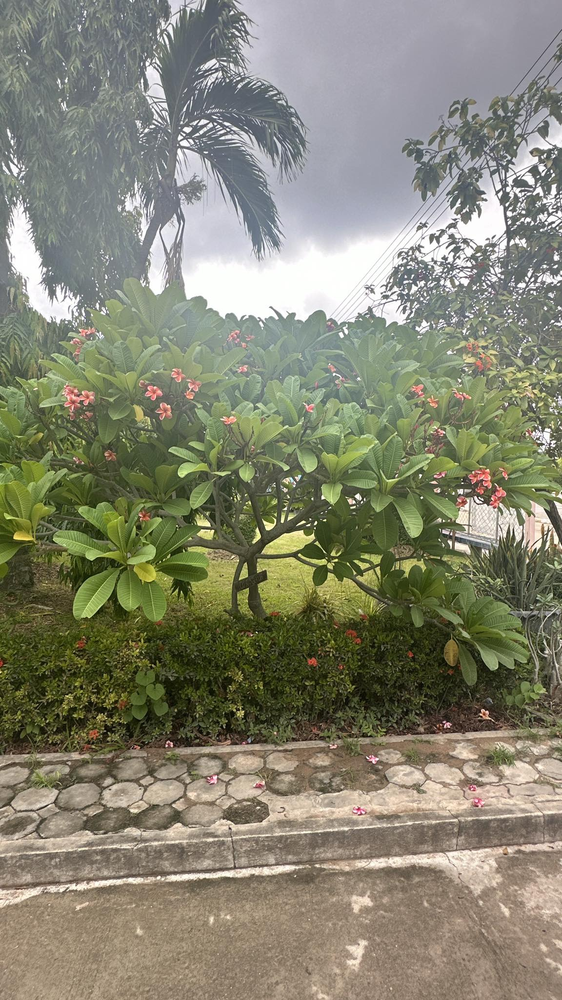
ลีลาวดี หรือ ลั่นทม
ลีลาวดี หรือที่หลายคนรู้จักกันในชื่อลั่นทม เป็นดอกไม้ที่มีความสวยงามและกลิ่นหอมชื่นใจ นอกจากจะใช้ประดับตกแต่งสวนแล้ว ลีลาวดียังมีสรรพคุณทางยา
สรรพคุณของลีลาวดี
ดอก:
ใช้ทำธูป หอมระเหยช่วยให้รู้สึกผ่อนคลาย
ผสมกับพลูเป็นยาแก้ไข้ แก้ไข้มาลาเรีย
ชงดื่มเป็นชา ช่วยบรรเทาอาการไอ เจ็บคอ
ช่วยให้หลับสบาย
บำรุงหัวใจ
เปลือกราก:
เป็นยาระบาย
แก้โรคหนองใน
แก้โรคไขข้ออักเสบ
ขับลม
ยางจากต้น:
เป็นยาระบาย
รักษาโรคไขข้ออักเสบ
ผสมกับไม้จันทน์และการบูรเป็นยาแก้คัน แก้ปวดฟัน
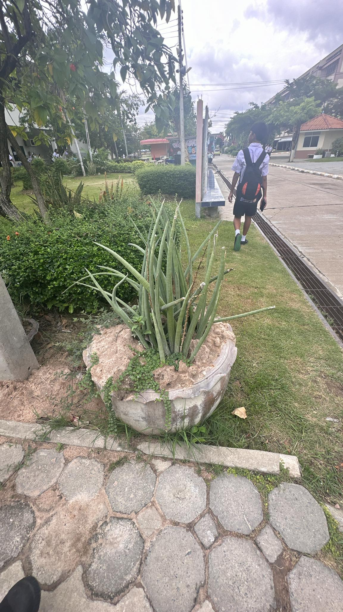
ว่านงาช้าง
ว่านงาช้าง นอกจากจะเป็นไม้มงคลที่คนไทยนิยมปลูกเพื่อเสริมบารมีและโชคลาภแล้ว ยังมีความเชื่อและสรรพคุณทางยา
สรรพคุณทางยา (ตามความเชื่อ)
รักษาโรคผิวหนัง: ช่วยรักษาแผลติดเชื้อ ผดผื่น และทำให้แผลแห้งเร็วขึ้น
บำรุงธาตุ: ช่วยบำรุงร่างกายให้แข็งแรง
แก้โรคสตรี: ช่วยบรรเทาอาการผิดปกติของประจำเดือน
แก้เจ็บคอ: ช่วยลดอาการเจ็บคอได้
ฟอกอากาศ: ช่วยดูดซับสารพิษในอากาศ ทำให้บ้านมีอากาศบริสุทธิ์
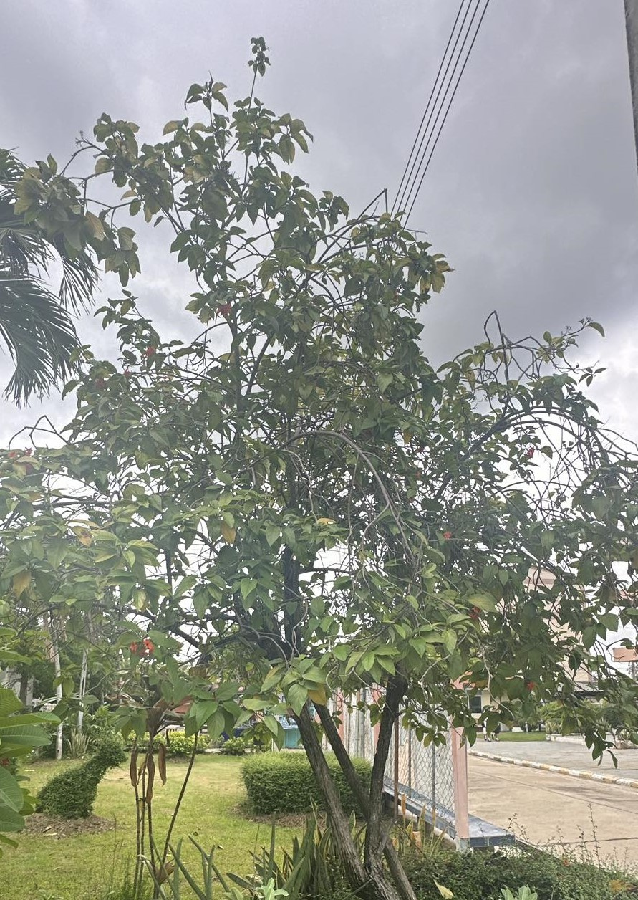
ต้นเงินหนุน
ต้นเงินหนุน นอกจากจะเป็นไม้มงคลที่หลายคนนิยมปลูกเพื่อเสริมความเป็นสิริมงคลให้กับบ้านและธุรกิจแล้ว ยังมีประโยชน์อื่นๆ
ประโยชน์ทางด้านความเชื่อ
เสริมสิริมงคล: เชื่อกันว่าต้นเงินหนุนจะช่วยเสริมสร้างความมั่งคั่ง นำโชคลาภมาให้ และช่วยให้ธุรกิจเจริญรุ่งเรือง
ป้องกันสิ่งไม่ดี: มีความเชื่อว่าต้นเงินหนุนสามารถป้องกันสิ่งไม่ดี และสิ่งอัปมงคลต่างๆ ได้
ประโยชน์ทางด้านการตกแต่ง
พิ่มความสวยงาม: ต้นเงินหนุนมีดอกสวยงาม สีสันสดใส ช่วยเพิ่มความสวยงามให้กับสวน หรือมุมต่างๆ ในบ้าน
ประโยชน์ทางด้านสิ่งแวดล้อม
ช่วยฟอกอากาศ: ต้นไม้ทุกชนิดช่วยดูดซับก๊าซคาร์บอนไดออกไซด์ และปล่อยออกซิเจนออกมา ช่วยให้คุณมีอากาศบริสุทธิ์หายใจ
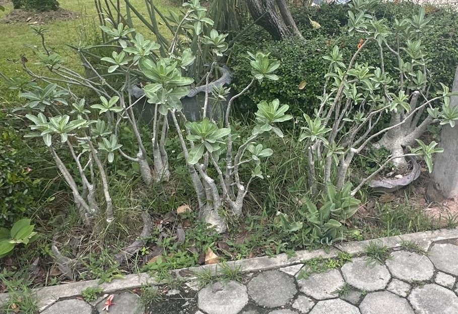
ชวนชม
ต้นชวนชมนั้นมีประโยชน์หลากหลายเลยค่ะ โดยเฉพาะในแง่การนำมาประดับตกแต่ง เนื่องจากมีลักษณะเด่นหลายอย่าง
ประโยชน์ของต้นชวนชม
ไม้ประดับ: ต้นชวนชมเป็นที่นิยมปลูกเป็นไม้ประดับ เพราะมีดอกสวยงามหลากสีสัน ดอกบานทน และออกดอกได้ตลอดปี ทำให้สวนหรือมุมพักผ่อนดูสดใส
ความหลากหลายของพันธุ์: มีพันธุ์ชวนชมให้เลือกปลูกมากมายหลากหลายสีสันและรูปทรง ทำให้สามารถเลือกพันธุ์ที่ถูกใจและเข้ากับสไตล์การตกแต่งได้
ทนแล้ง: ชวนชมเป็นพืชที่ทนแล้งได้ดี เหมาะสำหรับผู้ที่ไม่มีเวลาดูแลมากนัก หรือปลูกในพื้นที่ที่มีแสงแดดจัด
ขยายพันธุ์ง่าย: สามารถขยายพันธุ์ได้หลายวิธี ทั้งการปักชำ การตอนกิ่ง และการเพาะเมล็ด ทำให้สามารถเพิ่มจำนวนต้นได้ง่าย
ความเชื่อ: ในบางวัฒนธรรมเชื่อว่าต้นชวนชมเป็นต้นไม้มงคล นำโชคลาภมาให้ และช่วยป้องกันสิ่งไม่ดี
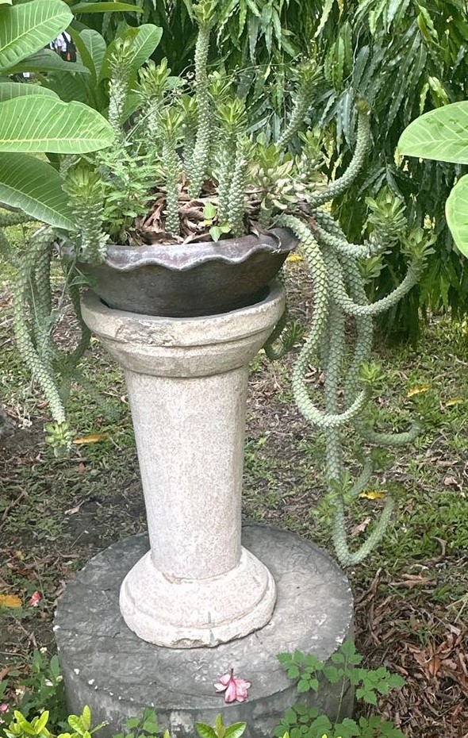
นาคราช
ต้นนาคราช เป็นพืชที่มีความเชื่อและความสำคัญทางวัฒนธรรมมาอย่างยาวนาน โดยเฉพาะในวัฒนธรรมไทย เชื่อกันว่าต้นนาคราชเป็นต้นไม้มงคลที่นำมาซึ่งโชคลาภและความเป็นสิริมงคลแก่ผู้ปลูก โดยมีความเชื่อที่หลากหลายเกี่ยวกับประโยชน์ของต้นนาคราช
สรรพคุณทางยาสมุนไพร
ไแก้พิษ: เชื่อกันว่าต้นนาคราชสามารถช่วยแก้พิษจากงู แมงป่อง และสัตว์มีพิษอื่นๆ ได้
ลดไข้: ช่วยลดไข้และบรรเทาอาการไข้
บำรุงกำลัง: ช่วยบำรุงกำลังและร่างกายให้แข็งแรง
รักษาแผล: ช่วยสมานแผลและลดการอักเสบ
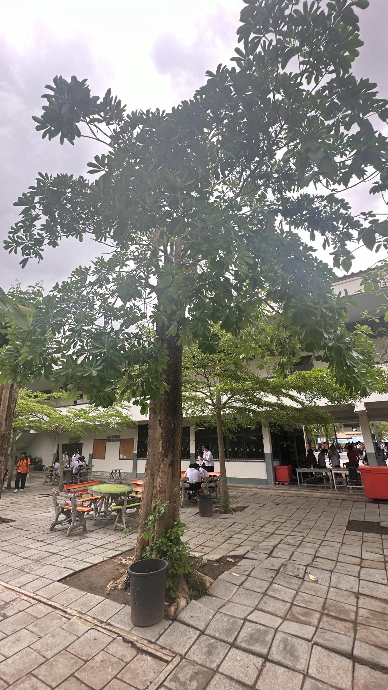
หูกวาง
ต้นหูกวาง นอกจากจะเป็นไม้ให้ร่มเงาและไม้ประดับที่สวยงามแล้ว ยังมีประโยชน์อีกมากมาย
ประโยชน์
ไม้ใช้สอย: เนื้อไม้ของต้นหูกวางมีคุณภาพดี แข็งแรง ทนทานต่อปลวกและแมลง เหมาะสำหรับใช้ในการก่อสร้าง ทำเฟอร์นิเจอร์ และเครื่องมือทางการเกษตร
พืชอาหาร: ผลของต้นหูกวางสามารถรับประทานได้ มีรสชาติหวานอมเปรี้ยว และมีสารอาหารหลายชนิด เช่น ไขมัน โปรตีน วิตามิน และแร่ธาตุ
พืชสมุนไพร: ส่วนต่างๆ ของต้นหูกวาง เช่น ใบ เปลือก และราก มีสรรพคุณทางยา สามารถนำมาใช้รักษาโรคต่างๆ ได้ เช่น บำรุงเลือด บำรุงหัวใจ ลดไข้ และแก้ท้องเสีย
พืชบำรุงดิน: ใบหูกวางเมื่อร่วงหล่นลงดิน จะช่วยปรับปรุงสภาพดิน ทำให้ดินร่วนซุย อุดมสมบูรณ์ และมีประโยชน์ต่อพืชชนิดอื่นๆ ที่ปลูกอยู่ใกล้เคียง
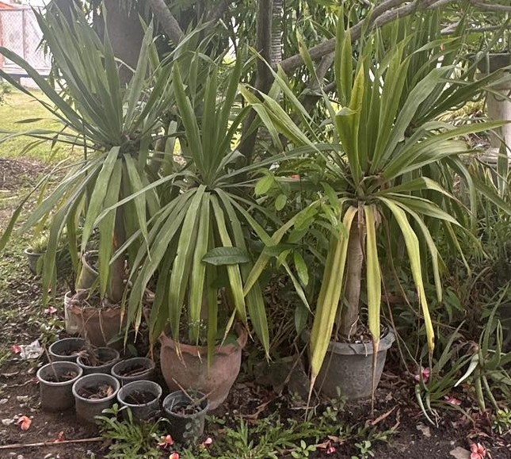
จันผา
ต้นจันผา นอกจากจะมีรูปทรงสวยงามและดอกหอมแล้ว ยังมีประโยชน์อีกมากมาย
ประโยชน์ทางด้านสมุนไพร
แก้ไข้: แก่นจันผาที่มีสีแดง มีสรรพคุณเป็นยาเย็น ช่วยแก้อาการไข้ได้หลากหลายชนิด
ลดไข้: การทดลองในสัตว์พบว่า สารสกัดจากจันผาด้วยน้ำ มีฤทธิ์ช่วยลดไข้
บำรุงผิว: ส่วนของลำต้นที่เกิดบากแผลนานเข้าจนเปลี่ยนเป็นเนื้อสีน้ำตาลแดง สามารถนำมาใช้เป็นส่วนประกอบในการปรุงน้ำยาอุทัย ช่วยบำรุงผิวพรรณ
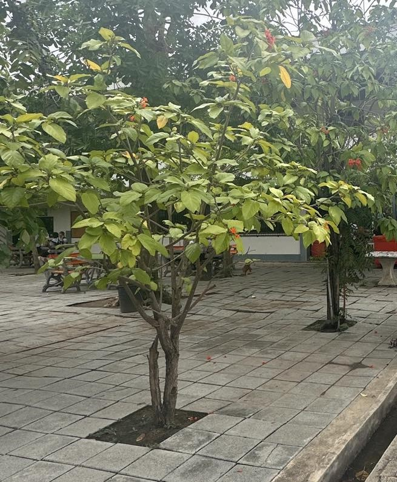
สาวสันทราย
ต้นสาวสันทราย นอกจากจะมีดอกสวยงามและส่งกลิ่นหอมแล้ว ยังมีประโยชน์ทางสมุนไพรอีกด้วยค่ะ โดยส่วนต่าง ๆ ของต้นสาวสันทรายสามารถนำมาใช้ประโยชน์ได้ดังนี้
ประโยชน์ทางด้านสมุนไพร
ราก: ใช้เป็นยาขับลม ช่วยบรรเทาอาการท้องอืด ท้องเฟ้อ
เปลือก: ใช้แก้บิด แก้ท้องร่วง ช่วยลดอาการปวดท้อง
ดอก: ใช้แก้ไข้ระบาย ช่วยลดไข้และช่วยให้ระบบขับถ่ายทำงานได้ดีขึ้น
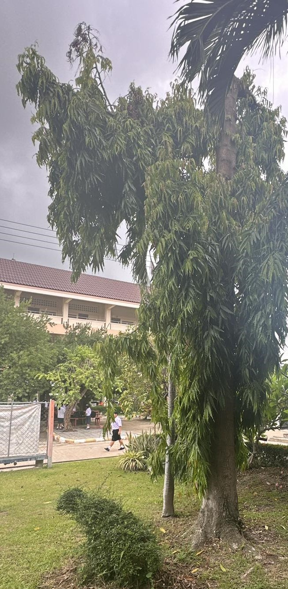
อโสก
มีดอกสวยงามและกลิ่นหอมแล้ว ยังมีประโยชน์อีกมากมายเลยค่ะ ทั้งด้านสมุนไพรและการใช้ประโยชน์อื่นๆ
ประโยชน์ทางสมุนไพร
ดอก:
แก้ไข้: ช่วยลดไข้ได้
ขับลม: บรรเทาอาการท้องอืด ท้องเฟ้อ
บำรุงโลหิต: ช่วยให้เลือดไหลเวียนดีขึ้น
บำรุงหัวใจ: ช่วยให้หัวใจแข็งแรง
เปลือก:
แก้ไข้: ช่วยลดไข้ได้
สมานแผล: ช่วยสมานแผล
แก้บิด: ช่วยบรรเทาอาการท้องเสีย
ราก:
ขับปัสสาวะ: ช่วยขับปัสสาวะ
แก้ปวด: ช่วยบรรเทาอาการปวด
แก้ไข้: ช่วยลดไข้ได้
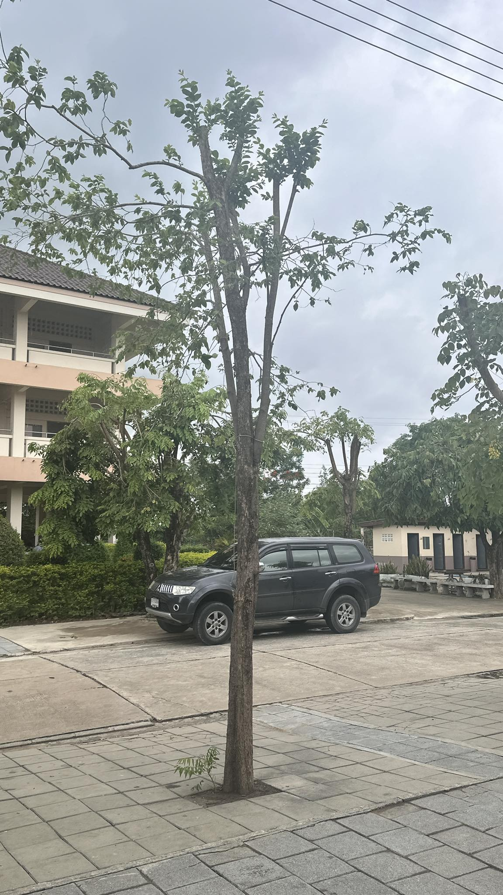
โมกมัน
ต้นโมกมัน นอกจากจะมีดอกสวยงามและส่งกลิ่นหอมแล้ว ยังมีประโยชน์อีกมากมายเลยค่ะ ทั้งด้านสมุนไพรและการใช้ประโยชน์จากเนื้อไม้
สรรพคุณทางสมุนไพร:
เปลือก: ช่วยเจริญอาหาร บำรุงธาตุ ทำให้ประจำเดือนปกติ แก้พิษแมลงสัตว์กัดต่อย แก้โรคไต ใบ: ขับน้ำเหลืองเสีย แก้ตับพิการ แก้ท้องมาน
ดอก: เป็นยาระบาย แก้พรรดึก (ท้องผูก)
ผล: แก้โรครำมะนาด ฆ่าเชื้อรำมะนาด
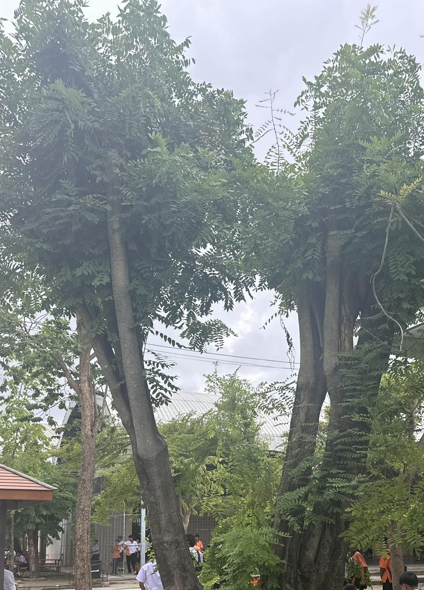
จามจุรี
ต้นจามจุรี นอกจากจะเป็นต้นไม้ใหญ่ให้ร่มเงาแล้ว ยังมีประโยชน์อีกมากมายเลยค่ะ ทั้งในด้านสมุนไพร การใช้ประโยชน์จากส่วนต่างๆ ของต้น และประโยชน์ทางนิเวศวิทยา
ใบ: ใช้ดับพิษ แก้ปวดแสบปวดร้อน
เมล็ด: แก้โรคผิวหนัง กลากเกลื้อน แก้เยื่อตาอักเสบ
เปลือกต้น: สมานแผลในปากคอ แก้โรคเหงือกบวม แก้ปวดฟัน แก้ริดสีดวงทวารหนัก แก้โลหิตตกใน
ประโยชน์ทางนิเวศวิทยา:
ดูดซับก๊าซคาร์บอนไดออกไซด์: ช่วยลดภาวะโลกร้อน
ผลิตออกซิเจน: ช่วยเพิ่มปริมาณออกซิเจนในอากาศ
เป็นแหล่งที่อยู่อาศัยของสัตว์: เช่น นก แมลง
การใช้ประโยชน์จากส่วนต่างๆ:
เนื้อไม้: ใช้ทำเฟอร์นิเจอร์ เครื่องมือทางการเกษตร
ใบ: ใช้เป็นปุ๋ยหมัก ปรับปรุงดิน
ดอก: เป็นอาหารของแมลง
ร่มเงา: ให้ร่มเงาในบริเวณกว้าง
บังลม: ช่วยลดความแรงของลม
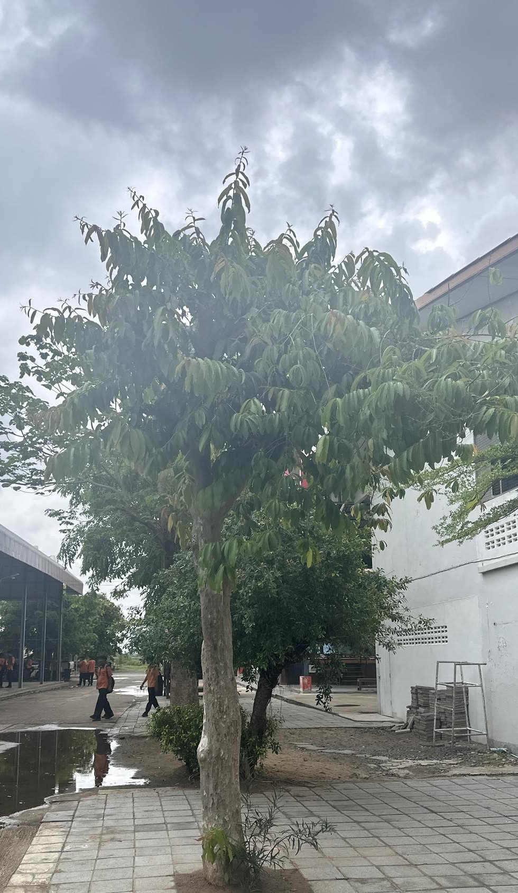
ต้นบุญนาค
ต้นบุญนาค นอกจากจะมีดอกสวยงามและส่งกลิ่นหอมแล้ว ยังมีสรรพคุณทางยาที่น่าสนใจอีกมากมาย โดยส่วนต่างๆ ของต้นบุญนาคสามารถนำมาใช้ประโยชน์ได้
สรรพคุณของส่วนต่างๆ
ดอก:
กลิ่นหอม: ใช้ทำน้ำหอม แต่งกลิ่นสบู่ หรือใช้ในการอบเครื่องหอม
ยาหอม: ดอกแห้งใช้เป็นส่วนประกอบในยาหอม ช่วยบำรุงหัวใจ แก้ร้อนใน กระสับกระส่าย
ขับเสมหะ: ช่วยขับเสมหะ บำรุงโลหิต
ผล: มีสรรพคุณในการขับเหงื่อ
ใบ: ใช้รักษาบาดแผลสด แก้พิษงู
แก่น: แก้เลือดออกตามไรฟัน
ราก: ขับลมในลำไส้
เปลือก: ฟอกน้ำเหลือง กระจายหนอง
กระพี้: แก้เสมหะในคอ
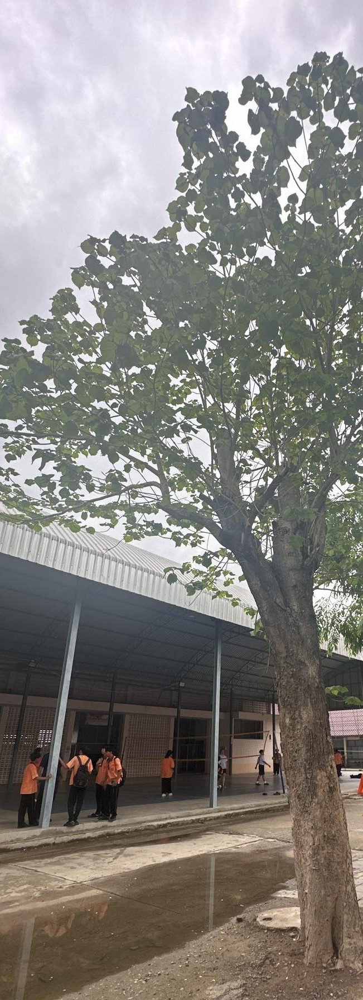
ต้นทองกวาว
ต้นทองกวาว นอกจากจะมีดอกสีส้มสดใสสวยงามแล้ว ยังมีประโยชน์มากมายเลย ทั้งในด้านสมุนไพรและการใช้ประโยชน์อื่นๆ
สรรพคุณทางยาของต้นทองกวาว
ใบ: ใช้ตำพอกฝีและสิว แก้ปวด ถอนพิษ แก้ท้องขึ้น ขับพยาธิ แก้ริดสีดวง
ดอก: ช่วยขับปัสสาวะ สมานแผลในปาก แก้พิษฝี
ยาง: ใช้แก้ท้องร่วง
เมล็ด: ขับไส้เดือน บดผสมน้ำมะนาว ทาแก้ผิวหนังอักเสบเป็นผื่นแดงและแสบร้อน
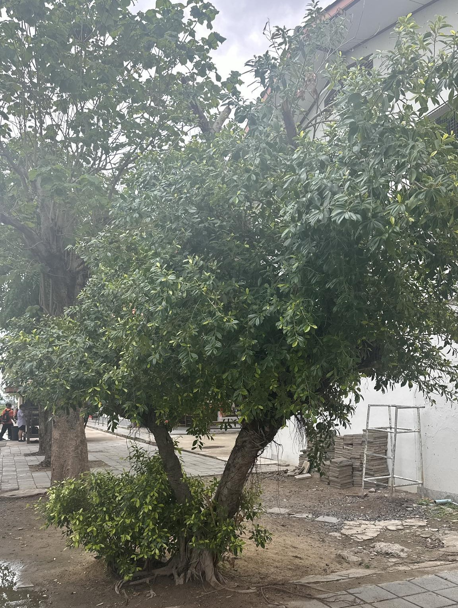
ต้นแก้วเจ้าจอม
ต้นแก้วเจ้าจอม นอกจากจะเป็นไม้ประดับที่มีดอกสวยงามและให้ร่มเงาแล้ว ยังมีประโยชน์อื่นๆ อีกมากมายเลย ทั้งในด้านการใช้ประโยชน์จากเนื้อไม้และสรรพคุณทางยา
ประโยชน์ของต้นแก้วเจ้าจอม
ไม้มีค่า: แก่นไม้ของต้นแก้วเจ้าจอมมีความแข็งแรงมาก มีความหนาแน่นสูง จึงนิยมนำมาใช้ทำเครื่องมือต่างๆ ที่ต้องการความแข็งแรงทนทาน เช่น ด้ามเครื่องมือช่าง รอกเรือ หรือแม้แต่ส่วนประกอบของเรือเดินสมุทร
ไม้ประดับ: ด้วยรูปทรงที่สวยงาม ดอกมีกลิ่นหอม ทำให้ต้นแก้วเจ้าจอมเป็นไม้ประดับที่ได้รับความนิยมปลูกทั้งในบ้านและสวน
สรรพคุณทางยา:
ยางไม้: มีสรรพคุณเป็นยาขับเสมหะ ยาระบาย ขับเหงื่อ แก้ข้ออักเสบ และใช้ร่วมในยาฟอกเลือด